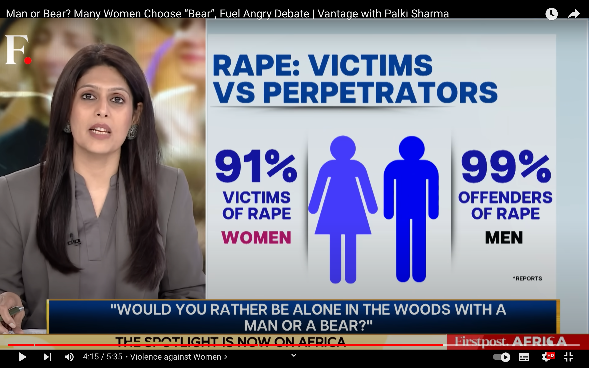

Would you rather be alone in the woods with a man or a bear?

Source:
YouTube Video
Would you rather be alone in the woods with a black man or a white man?
Source:
Wikipedia Image
Justifying fears based on statistics can lead to harmful and unfair stereotypes.